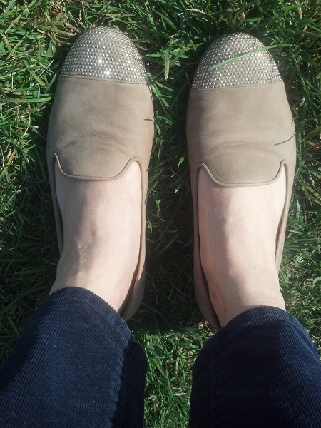
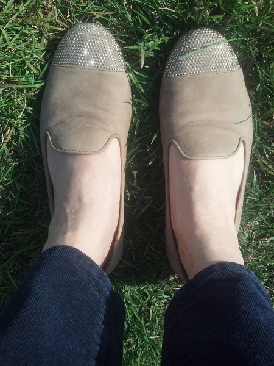

Things happen; good and bad; over the top and understated; unexpected and highly anticipated. It's the way the world keeps spinning – things keep happening. I'm not as interested in the things that happen as I am in why things happen. It's constantly on my mind to the point where I take different routes home just to see how my day will unfold or to the degree that I'll set my alarm to wake me up at a different time each morning so I can compare the day's outcome to the previous one. There's no telling if a different route or an alternate alarm clock buzzing time has any impact on the hours ahead of me, but I can't stop entertaining the possibility that maybe opening my eyes at a different moment or taking more footsteps every day, somehow, in even the smallest way, influences events, encounters and conversations, which keep the world- even if it's just my own little world – spinning around.
That is my logic; it's built on the hairline chance that the smallest difference, the tiniest variation in my everyday activities can lead to something new, something good, something great, something that will renew my belief in the very habits I'm perpetuating– never waking up at the same time twice and always looking for new ways home. It's my way of continually seeking out reasons for why things happen and wondering why other things don't.


I went for a walk on my favorite road in New York State yesterday. It was glorious; the sky was grey and over the state line I could hear thunder rolling through Connecticut. At home, my skittish hound dog was undoubtedly hiding in the basement, but out here, on a dirt path traversed by more horses than people, I was opening my arms wide and breathing in the heavy, expectant air. Beyond the low rock walls, I looked into the woods and saw nothing but brilliant green ferns spread out like a carpet along the ground, surrounding tree trunks and hiding their roots. It was one of the most peaceful, quietly joyous afternoons I’ve had in a long time. And it was my birthday, so that made it a little extra special, too.
I have no idea what kind of light fills my apartment during the day (because I’m a working lady!), but sometimes on the weekends, when I’m home and it’s quiet and I’m observing my own surroundings, my eyes catch this really beautiful, bright light bouncing off the tiled walls of my small bathroom. I have no idea where the light originates because my bathroom is situated in the back of the building, and it looks out to an ugly concrete wall through a miniature window, but I like it. That’s right; I like the weekend light in my bathroom a lot.

Behind the house where I grew up – where my parents still live – on Whitlock Lane, construction of a new house has been underway throughout the winter. When I was home for Easter, I took myself on a self-guided tour around the mounds of dirt and piles of wood scraps laying outside, walking from front to back on the small piece of land created from where trees and tall grass once stood. I peered through the windows and could see that the house is essentially just drywall and unfinished floors - not quite a home, but close. There are no railings on the staircases, and most of the insulation is exposed, but there are windows looking out to the trees that have not been taken down – windows that will, perhaps, be someone’s bedroom. Maybe it will be the bedroom of a three year old girl whose family moved to Ridgefield like mine did. Maybe she’ll get used to looking out the window and seeing nothing but nature. I hope so. I hate the new house. But I’m bias. I prefer my open spaces to be just that: open and uninterrupted. I like to see grass growing high and fields that aren’t sacrificed for cement foundations. I like knowing where a family of deer sleeps by mapping the depressions of their bodies in the earth. I’ve liked those things for as long as I’ve listened to crickets in my family’s backyard, for as long as I’ve laid in the snow, for as long as I’ve walked along stone walls, for as long as I’ve looked out my childhood bedroom window to see more trees than I could count. My feelings about the new house or the ones that will follow won’t change even after I don’t have a Connecticut home to return to. I’ll always remember the way the land looked from my bedroom window when I was three, when I was thirteen, when I was twenty three and when I was thirty-three. I’ll always prefer that view.
On Sunday night, I slept with the windows in my apartment open so warm Spring air could fill the space and bring in a fresh scent. On Monday night, I did the same thing, positive that Spring was here to stay. On Tuesday night, I felt a chill in the air and I heard the radiator fire up again. I closed the windows and went to bed. When I woke up on Wednesday, I found a layer of light snow sprinkled across the cars parked on my street. I was wrong about Spring coming to stay, but I was glad I closed my windows.

Strolling around Brooklyn Heights on Sunday, I fell in love (as I always do), with the brownstones and the tree-lined streets there; the slate sidewalks and even the garbage neatly piled up at the bottom of what looks like perfectly aged stone steps. It’s such a beautiful neighborhood. But then I came across this 1970’s-inspired red door and I was so happy to find something different-looking in a neighborhood that, despite its old New York charm, can be so much of the same one door after the other.

Have you ever noticed that the word “sign” is part of the word “design”, but it’s pronounced in a completely different way? I hadn’t until I walked by Bert Waggott’s office in the West Village a few weeks ago. I was staring at the unique plaque that looks new, but also has a timeless Mid-Century Modern look when it struck me: Design. Sign. I laughed a little, mostly to myself, because I was reminded of the time that I stood outside a nail salon and realized the word “polish” could mean exactly what the business in front of me specialized in, but that it could also be pronounced as a way to describe an entire nation of people (hint: they can be found in Poland). I love how Mr. Waggott used a small metal plate and a bold font to illustrate what he can design for his clients with just a small sign.

Each night when I come home from work or freshly sweaty from the gym I stop to open my flip-top mail slot before glancing at the daily delivery of packages left in the communal drop-off spot in my apartment building. I never expect to see my name on any of them, but I always look. Last night was just another exercise in my daily routine, but with an unexpected surprise. Thru the double doors of my building, down the narrow hallway wearing gym clothes I couldn’t wait to leave in a pile on my floor, pop open my slim metal mailbox and fight to extract the over-stuffed magazines and envelopes; turn to go upstairs and glance at the boxes hanging over the radiator to see a familiar name printed on a long box of flowers: Suzanne Shrekgast. What?! I took a closer look, literally pushing my face to the label with a name that could only be mine. There I was in print, there was no mistake. I tucked the box under my arm and climbed the few steps to my apartment. First thing was first, though: off with the gym clothes and into the shower – I wanted to be clean to discover who sent the mystery flowers. Two minutes later, still wet but free of gym germs, I carefully opened the box to reveal a bouquet of red, yellow and purple tulips with a note neatly placed between two green stems. “I hope this brightens your day,” the card read. It was a note from my cousin in Chicago who sent the flowers for the single best occasion – no real occasion at all.
I spent Thursday night in a Broadway theatre, listening to the music of Carole King at “Beautiful”, the musical based on her life and career. I might as well have traveled back in time to my pre-teen days in Connecticut, though, when my mom and I, cruising around in a wood paneled navy blue station wagon, would faithfully listen to a radio station that played her music and songs from similar artists, all whom I still adore today; Carly Simon, Barbara Streisand, Peter, Paul and Mary, and James Taylor just to name a few. I was young and I didn’t always know what the lyrics in their songs were about, but I loved how they sounded with the pianos, the guitars and the drums accompanying each word. What really makes me love that music now, though, are the memories of riding in my family’s enormous station wagon, singing songs with my mom that I know will always bring me back to another place and another time.


I arrived in Agra late last night with the hope that Monday would be cloudless and beautiful for a day at the Taj Mahal, India’s crown jewel. I couldn’t sleep; partly because of the chanting going on outside my hotel window, but mostly because I was too excited to finally see the Taj Mahal in front of me. When I woke up, a thin layer of haze covered this small city, but by 10am blue skies were overhead and I was touching the marble facade of the Taj.

I can’t stop taking pictures of everything I see; men, women, school kids, buildings, signs, stray dogs, cows (there’s no shortage of either here), buildings old and new, food, trees and anything else that makes me look twice and everything that will make me remember my Indian adventure. Everything. And I can’t stop taking pictures of trash. In India, it’s everywhere - along the side of the road, outside people’s homes and shacks, in cities, and on the train tracks. Even In small streams near tiny villages, empty bottles, plastic bags, cups and anything else that was once useful, but no longer suits a need, is in the water and scattered across the landscape. Ironically, I noticed the overwhelming presence of garbage in the absence of it, through the window of the Mandovi Express train as it weaved through a particularly sparsely populated, hilly region of India. Far away from the tracks, at the foot of the brown rock plateaus, in fields that appeared to be untouched but impossibly so in this country of one billion, the land was not dotted with manmade things like paper, discarded articles of clothing and cartons that were once full. It was clean. Where there were no people, there was no garbage, but with so much consumption in India, keeping what is a beautiful country clean seems nearly impossible.


I’m on my way out of the small southern province of Goa via the Mandovi Express, a train that runs up the coast and into the city of Mumbai. Experiencing Goa, swimming in the Arabian Sea and dining on coconut milk straight from the fruit has been amazing - something that I would even classify as a once in a lifetime experience - but Goa, with all its natural beauty and sleepy beach town vibe, isn’t the real India. I’ve been reminded of that from the books I’ve read leading up to this trip, from speaking with local Goans and other tourists like myself, and even from a recent and very timely New York Times article. They all say the same thing: Goa is nice, but it’s not the real deal. Walking around Old Goa, and the villages of Candolim and Panjim yesterday, the truth of these sentiments became clear when I couldn’t stop comparing them to small towns I’ve visited in Europe. The streets were narrow, the shops were filled with cute treasures that made me want to fill up my suitcase and long lunches brought uniformed children out of their schools and back home for a siesta before their afternoon sessions. It’s the Goan way of life, but as I’ve been told by those who have experienced far more of this giant country than I have, it’s not the real Indian way of life. Now, as I make my way north, the Indian landscape is whizzing past me. I’m trying not to miss anything, but it’s a nine hour journey and one that could - and often does- take even longer for unknown and unannounced train delays. I’m tired and I want to take a nap, but I don’t want a cow outside my window, an arid plantation, a rare river to go unphotographed from by private first class perch that comes complete with four beds, clean linens and a wool blanket. In here, I’m still not in the real India, but I’ll get there eventually and I still won’t want to miss a thing.
The unseasonably warm weather in New York led to some equally unseasonably long walks outside over the weekend. I like the cold weather, but casually strolling around the West Village with friends in search of a dinner spot without shuffling over ice and shielding ourselves from the cold was a nice reminder of New York in the Spring. When we met a pair of horses hanging out in their NYPD carrier parked on Christopher Street, I introduced myself to one of them and asked if i could snap a picture. He didn’t mind posing for a photo and the cops sitting in a car a few feet from me were either blissfully unaware or just as happy as I was to be enjoying a rare balmy Sunday night in December.
A stranger scaled down the face of my office building on a beautiful Tuesday afternoon. He wasn’t washing windows, as I suspected, but was snapping photos of the building with a point and shoot camera that he revealed from one of the many pouches dangling from his harness. I looked at him belaying down 120 Wall Street and when he was directly outside my window he looked at me. We smiled at each other. Then I went back to my work and he went back to his.

A few weeks ago, I ran through an open field of tall grass in New York State. It was a beautiful Indian summer afternoon - the kind of day that I fantasize about during the hot, sticky summer. Leaving my dog (and my mom) sitting on a boulder where we soaked up the sun, I took off into a field that I snow-shoed through in February. Quick, quick, quick I hopped over ditches and dodged patches of wildflowers until I ran out of breath and the boulder had become smaller in my line of vision. Nearby, a patch of Milkweed stalks shooting up from the soft ground caught my eye. I didn’t think it was right, but I couldn’t resist plucking one from its stem and dissecting it in the middle of the field. Gently, I dug my fingernails into the soft, green pod and slowly felt it tear in a perfect line. As the rib of the pod grew longer with every regretful rip, a cocoon of white strands began to flow out into the afternoon air. Before they could all take flight, I removed the strands from their cozy bed with one swift pluck and held them to the sky. Brown seeds at the base of each thread were huddled together, anchoring the weightless wisps. I held my camera up to the Milkweed plant I destroyed and snapped a few photos before letting the wind carry the threads to another part of the field. When the snow falls this winter, I’ll be back in that field with my snowshoes (and my dog and mom, too). I’ll walk over the ground where the seeds landed a few weeks ago, but I won’t see them. In the Spring, when the earth thaws and the snow melts, I’ll go back again and try to find the new Milkweed plants that flew from my hand to their new home in the ground.
 

It’s no surprise to anyone who knows me that I love shoes. I talk about them a lot and think about them even more. I buy shoes throughout the year, never discriminating between seasons or styles, but there is one pair that takes special scrutiny and research: birthday shoes. My ritual of buying a pair of shoes on my birthday began in 2009 when I decided that as a grown-up living in a grown-up city in a grown-up (albeit small, but non-collegiate) apartment, I needed to own some grown-up shoes to put in my grown-up closet. A birthday, so personal and unlike any other holiday, seemed like the perfect occasion to pair my new age with equally new shoes to take me through a new year. But they had to be special shoes; ones that would make me remember the beginning of that year and what my life looked and felt like then. Coincidentally, my new tradition also began around the same time that I started to notice my growing love of design and my tendency to obsess over the placement of furniture and objects in my space. My first pair of birthday shoes – ones that I stalked, filled my dreams with and finally purchased – were a pair of off-white Be&D flats with a studded heel flap from The Shoe Box. In the years that followed, my changing style was reflected in my shoes and eventually my closet. The shoes I’ve chosen to make room for over the past five years have been surprising. Hot pink laser-cut Givenchy gladiators? Studded metallic Prada wedge strappy sandals? I didn’t think my taste would lead me to either of those places or to neon yellow Stella McCartney espadrille ankle boots. But apparently I can surprise even myself, which is one reason (aside from the escalator rides at Barneys and Bergdorf) why I love this tradition I’ve created for my grown-up self: I never know what’s going to catch my eye, but sometimes, looking for something without knowing what it looks like is the most thrilling part of my annual search. And when I find something I love, it’s more than shoes, it’s the realization of personal style.

My office building on Wall Street always seems to be under construction or wrapped up in tarps to mask some sort of renovation happening behind its pink and white marble walls. From the outside, the building adds a nice, understated but regal touch to the lower Manhattan skyline, but inside the stairwells smell like salt water and the ground floor is vacant and dark; a result of damage sustained from Hurricane Sandy. Over the past few weeks, though, there’s been some noticeable progress made in the construction that, during the winter and spring months, seemed never-ending. The main entrance on Wall Street has re-opened, hard-hatted construction crews have dwindled, people who come to work here no longer have to dodge heavy duty bins of scrap metal, and the lobby has been restored to an even better, brighter version of its pre-Sandy self. And then there are the things that I like more than the shiny white walls and the upgraded security system. There are the architectural details from the building’s original skeleton that I never even noticed until a few days ago when I came back from a walk and saw an Art Deco shadow on the floor made possible by the sun above.

There are so many people in New York City that when you’re alone in a public space, the absence of other human beings is actually startling. I was in a Brooklyn Heights subway station on a Friday night when I first noticed, well, nobody. And it wasn’t late, either. Strange. In the weeks that followed I started noticing it - the emptiness - even more; in elevators, as I walked through tunnels that connect subway lines or even as I strolled down a traffic-free street in my neighborhood that’s usually filled with people at all hours of the night. All these places were empty. I started to wonder where everyone went because when you have millions of neighbors in a place as populated as New York City, it’s kind of weird to be the only one around.


text text text text text text text text text